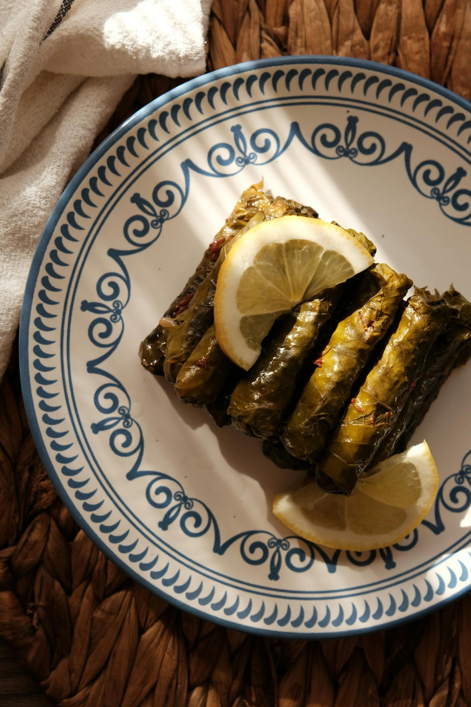

Home
Sarma

Description
A beloved Turkish meze of tender grape leaves wrapped around a fragrant rice filling with herbs, onions, and olive oil. Served at room temperature, these delicate rolls are light, aromatic, and gently tangy—perfect as part of a mezze spread or a refreshing appetizer.
Ingredients
- 1 jar grape leaves (about 200-250 g), rinsed and drained
- 1 cup short-grain rice, rinsed
- 1 large onion, finely chopped
- 3-4 tbsp olive oil (plus extra for drizzling)
- 2 tbsp pine nuts (optional)
- 2 tbsp currants or small raisins (optional)
- 2 tbsp fresh parsley, finely chopped
- 1 tbsp fresh dill, finely chopped (or 1 tsp dried)
- 1 tsp dried mint
- 1 tsp sugar
- Juice of 1 lemon (plus extra for serving)
- 1½ cups water
- Salt and black pepper, to taste
Steps
- Prepare the filling: Heat olive oil in a pan over medium heat. Add onion and cook until soft. Stir in pine nuts (if using) and lightly toast. Add rice and cook for 1-2 minutes.
- Season: Mix in currants, parsley, dill, dried mint, sugar, salt, and pepper. Add water and simmer until rice is partially cooked and liquid is mostly absorbed. Let cool slightly.
- Prepare leaves: Lay grape leaves flat, shiny side down. Trim any tough stems.
- Roll the sarma: Place a small spoonful of filling near the base of each leaf. Fold sides inward and roll tightly into small cylinders.
- Arrange and cook: Line the bottom of a pot with a few extra leaves. Arrange sarma seam-side down in layers. Drizzle with olive oil and lemon juice. Add a little water (just enough to reach halfway up the rolls).
- Simmer: Cover with a plate to keep them in place and cook on low heat for 35-45 minutes until rice is fully tender.
- Rest and serve: Let cool in the pot. Serve at room temperature with extra lemon juice and lemon slices. Afiyet olsun :)